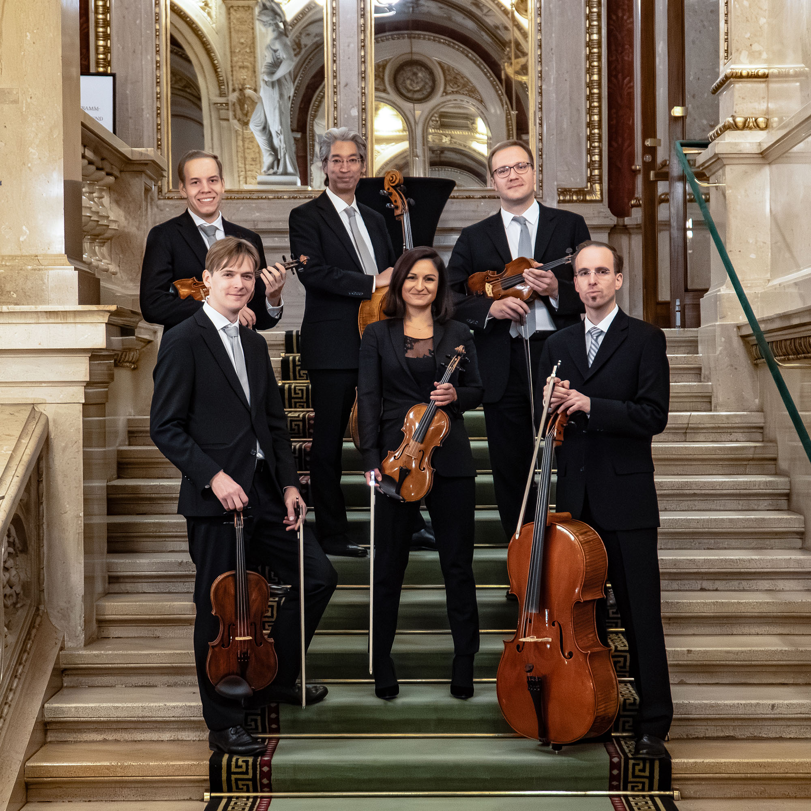

Elsa Álvarez

Viena. 20/4/26. Musikverein. Schönberg: Verklärte Nacht, op. 4. Schubert: Quintet en do major, D 956. Alina Pinchas, David Kessler, violins. Benjamin Beck, Christoph Hammer, violes. Bernhard Naoki Hedenborg, David Pennetzdorfer, violoncels.
Els membres de l'Ensemble de la Filharmònica de Viena van ser els encarregats de donar vida a la versió original per a sextet de corda de Verklärte Nacht, op. 4, d’Arnold Schönberg. Va haver-hi un canvi en l’ordre de les peces programades. De fet, se’m feia estrany que primer toquessin Schubert i a la segona part Schönberg, essent el Quintet tan potent emocionalment, a banda de llarg. Verklärte Nacht també és molt potent, més pel que amaga que pel que expressa.
Els sis instrumentistes van començar en un to baix, de confidència, gairebé de confessió de quelcom inconfessable. La tensió latent va travessar tota l’execució, i alhora vam percebre una força emotiva descomunal. Les obres d’art que suggereixen més que no criden són les més penetrants i violentes perquè són punxons directes, no tan sols a l’ànima, sinó a les entranyes, com un verí que s’escola lentament gola avall, al principi sense cap efecte, i que, a poc a poc, es va apoderant del cos fins que el deixa sense facultats i sense vida. Aquest és l’efecte hipnòtic de Verklärte Nacht, no per una representació ostentosa, sinó per la latència inexpressada d’una culpa no expiada. Schönberg va fer una traducció musical incisiva i màgica del poema homònim de Richard Dehmel. I els sis membres de la Filharmònica de Viena van fer una traducció impecable de la partitura, amb unes dinàmiques plenes de matisos que van copsar el meandre d’emocions barrejades i contradictòries que recorren l’ànima del subjecte turmentat. Van aconseguir la quadratura del cercle en haver-hi un conjunt orgànic molt ben amalgamat i alhora un protagonisme individual de cadascun precís a cada moment.
Però què dir de Schubert? Era la primera vegada que sentia Schubert en directe a la seva ciutat, al Musikverein, amb músics de la Filharmònica de Viena, i concretament el seu imponent i colpidor Quintet, D 956. No tinc una peça concreta preferida de Schubert —potser el segon moviment del quartet “La mort i la donzella” seria el que més m’ha marcat al llarg dels anys, però no és l’únic—, però el famós Adagio, l’expressió més lúcida i alhora més colpidorament turmentada de la mort, és el crit més violent d’un home desesperat contra la mort. Però la violència és latent, i això la fa més gran.
Els cinc membres de la Filharmònica de Viena van fer novament el miracle. Amb un so poderós i molt incisiu van abordar cadascun dels temes amb expressivitat, elegància i precisió. No es va escapar cap detall, va ser una descripció neta i acurada, però també amarada inevitablement de vida i de lluita, d’una de les obres de cambra més importants de la història de la música. La seva interpretació va causar una emoció directa a flor de pell, com una carícia feta amb un ganivet fred que saps que tard o d’hora se’t clavarà fins a dessagnar-te.
A la Brahms Saal del Musikverein va haver-hi silenci absolut, per una cultura musical que ve d’antic i per la majestat i la reverència que Schubert es mereix, per haver estat un dels millors compositors de la història, i per haver mort a una edat que no li tocava. La seva música traspua indefectiblement el dolor que el va turmentar d’ençà que li van diagnosticar la malaltia incurable que el duria a la tomba sis anys més tard. A mi la música de Schubert sempre em produeix llàgrimes de dolor, perquè en ella hi veig el patiment d’un home dissortat, d’un geni incomprès i no reconegut, un home d’una lucidesa i una sensibilitat artística extraordinàries.
El dolor latent es va sentir amb molta claredat en el tercer moviment, al final del tema central, just abans de la reexposició del primer, amb un to baix, com la calma que precedeix la tempesta de manera inevitable. I l’Allegretto final en canvi, va ser una dansa a la vida, a la qual els músics van donar exactament això, el ritme marcat i precís de la dansa, com si volguessin esbandir i apartar la mort de l’horitzó.